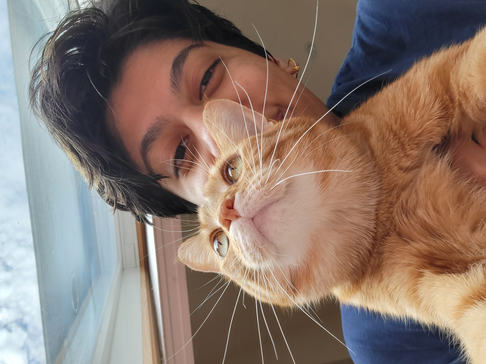

About

Divya Shankar
Divya Shankar is currently a senior at the University of Michigain. She is majoring in Art and Design the University's Stamps school of Art and Design and minoring in UX Design at the University's School of Information.
As a senior, Divya is currently looking for internships/work. She is prolific in painting and has a strong understand of design. Divya likes to play with her cats and bake in her free time.